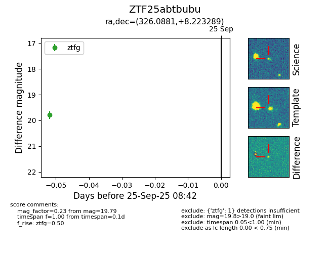

FINK: ZTF25abtbubu
Lasair: ZTF25abtbubu
ALeRCE: ZTF25abtbubu
ZTF25abtbubu (ztf,fink)
equatorial (ra, dec) = (326.0881,+8.22329)
galactic (l, b) = (64.1121,-32.55274)

last ztfg=19.79
1 ztfg detections